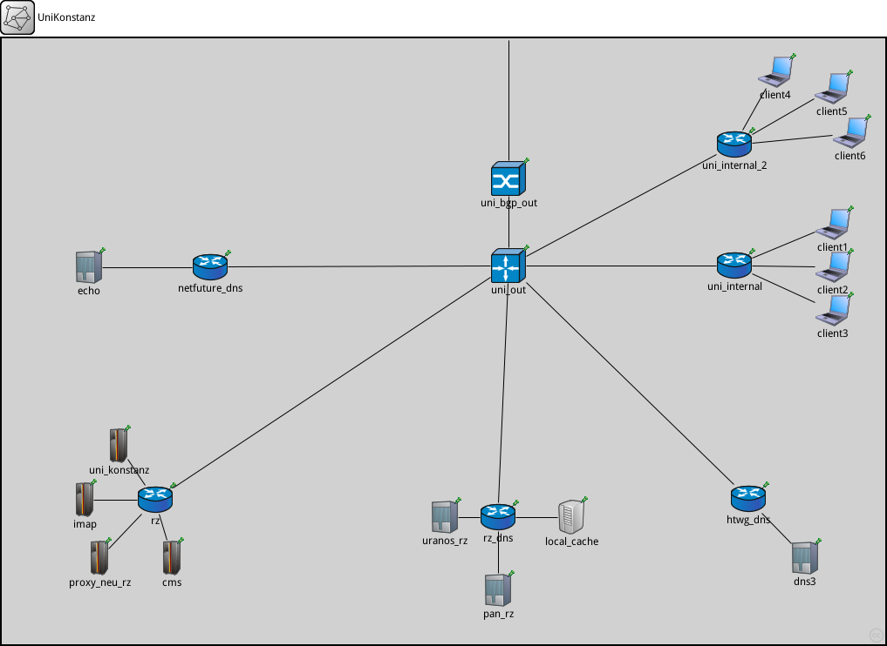
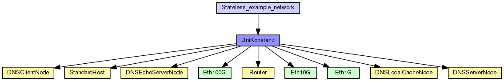

This documentation is released under the Creative Commons license
This documentation is released under the Creative Commons license(no description)
The following diagram shows usage relationships between types. Unresolved types are missing from the diagram. Click here to see the full picture.
The following diagram shows inheritance relationships for this type. Unresolved types are missing from the diagram. Click here to see the full picture.

| Name | Type | Description |
|---|---|---|
| Stateless_example_network | network | (no description) |
| Name | Value | Description |
|---|---|---|
| isNetwork | ||
| display | bgb=1013,696 |
| Name | Direction | Size | Description |
|---|---|---|---|
| ethg | inout |
| Name | Type | Default value | Description |
|---|---|---|---|
| imap.status.initialStatus | string | "UP" |
TODO @signal, @statistic |
| imap.networkLayer.configurator.networkConfiguratorModule | string | "configurator" |
the absolute path to the IPv4NetworkConfigurator; use "" if there is no configurator |
| imap.networkLayer.configurator.configureRoutingTable | bool | true |
add routing entries to routing table (uses the configurator module) |
| imap.networkLayer.ip.routingTableModule | string | ||
| imap.networkLayer.ip.procDelay | double | 0s | |
| imap.networkLayer.ip.timeToLive | int | 32 | |
| imap.networkLayer.ip.multicastTimeToLive | int | 32 | |
| imap.networkLayer.ip.fragmentTimeout | double | 60s | |
| imap.networkLayer.ip.forceBroadcast | bool | false | |
| imap.networkLayer.arp.routingTableModule | string | ||
| imap.networkLayer.arp.retryTimeout | double | 1s |
number seconds ARP waits between retries to resolve an IPv4 address |
| imap.networkLayer.arp.retryCount | int | 3 |
number of times ARP will attempt to resolve an IPv4 address |
| imap.networkLayer.arp.cacheTimeout | double | 120s |
number seconds unused entries in the cache will time out |
| imap.networkLayer.arp.globalARP | bool | false | |
| imap.routingTable.routerId | string | "auto" |
for routers, the router id using IPv4 address dotted notation; specify "auto" to select the highest interface address; should be left empty ("") for hosts |
| imap.interfaceTable.displayAddresses | bool | true |
whether to display IP addresses on links |
| imap.pcapRecorder.verbose | bool | false |
whether to log packets on the module output |
| imap.pcapRecorder.pcapFile | string | "" |
the PCAP file to be written |
| imap.pcapRecorder.snaplen | int | 65535 |
maximum number of bytes to record per packet |
| imap.pcapRecorder.dumpBadFrames | bool | true |
enable dump of frames with hasBitError |
| imap.pcapRecorder.moduleNamePatterns | string | "wlan[*] eth[*] ppp[*] ext[*]" |
space-separated list of sibling module names to listen on |
| imap.pcapRecorder.sendingSignalNames | string | "packetSentToLower" |
space-separated list of outbound packet signals to subscribe to |
| imap.pcapRecorder.receivingSignalNames | string | "packetReceivedFromLower" |
space-separated list of inbound packet signals to subscribe to |
| imap.lo0.lo.mtu | int | 4470B | |
| proxy_neu_rz.status.initialStatus | string | "UP" |
TODO @signal, @statistic |
| proxy_neu_rz.networkLayer.configurator.networkConfiguratorModule | string | "configurator" |
the absolute path to the IPv4NetworkConfigurator; use "" if there is no configurator |
| proxy_neu_rz.networkLayer.configurator.configureRoutingTable | bool | true |
add routing entries to routing table (uses the configurator module) |
| proxy_neu_rz.networkLayer.ip.routingTableModule | string | ||
| proxy_neu_rz.networkLayer.ip.procDelay | double | 0s | |
| proxy_neu_rz.networkLayer.ip.timeToLive | int | 32 | |
| proxy_neu_rz.networkLayer.ip.multicastTimeToLive | int | 32 | |
| proxy_neu_rz.networkLayer.ip.fragmentTimeout | double | 60s | |
| proxy_neu_rz.networkLayer.ip.forceBroadcast | bool | false | |
| proxy_neu_rz.networkLayer.arp.routingTableModule | string | ||
| proxy_neu_rz.networkLayer.arp.retryTimeout | double | 1s |
number seconds ARP waits between retries to resolve an IPv4 address |
| proxy_neu_rz.networkLayer.arp.retryCount | int | 3 |
number of times ARP will attempt to resolve an IPv4 address |
| proxy_neu_rz.networkLayer.arp.cacheTimeout | double | 120s |
number seconds unused entries in the cache will time out |
| proxy_neu_rz.networkLayer.arp.globalARP | bool | false | |
| proxy_neu_rz.routingTable.routerId | string | "auto" |
for routers, the router id using IPv4 address dotted notation; specify "auto" to select the highest interface address; should be left empty ("") for hosts |
| proxy_neu_rz.interfaceTable.displayAddresses | bool | true |
whether to display IP addresses on links |
| proxy_neu_rz.pcapRecorder.verbose | bool | false |
whether to log packets on the module output |
| proxy_neu_rz.pcapRecorder.pcapFile | string | "" |
the PCAP file to be written |
| proxy_neu_rz.pcapRecorder.snaplen | int | 65535 |
maximum number of bytes to record per packet |
| proxy_neu_rz.pcapRecorder.dumpBadFrames | bool | true |
enable dump of frames with hasBitError |
| proxy_neu_rz.pcapRecorder.moduleNamePatterns | string | "wlan[*] eth[*] ppp[*] ext[*]" |
space-separated list of sibling module names to listen on |
| proxy_neu_rz.pcapRecorder.sendingSignalNames | string | "packetSentToLower" |
space-separated list of outbound packet signals to subscribe to |
| proxy_neu_rz.pcapRecorder.receivingSignalNames | string | "packetReceivedFromLower" |
space-separated list of inbound packet signals to subscribe to |
| proxy_neu_rz.lo0.lo.mtu | int | 4470B | |
| cms.status.initialStatus | string | "UP" |
TODO @signal, @statistic |
| cms.networkLayer.configurator.networkConfiguratorModule | string | "configurator" |
the absolute path to the IPv4NetworkConfigurator; use "" if there is no configurator |
| cms.networkLayer.configurator.configureRoutingTable | bool | true |
add routing entries to routing table (uses the configurator module) |
| cms.networkLayer.ip.routingTableModule | string | ||
| cms.networkLayer.ip.procDelay | double | 0s | |
| cms.networkLayer.ip.timeToLive | int | 32 | |
| cms.networkLayer.ip.multicastTimeToLive | int | 32 | |
| cms.networkLayer.ip.fragmentTimeout | double | 60s | |
| cms.networkLayer.ip.forceBroadcast | bool | false | |
| cms.networkLayer.arp.routingTableModule | string | ||
| cms.networkLayer.arp.retryTimeout | double | 1s |
number seconds ARP waits between retries to resolve an IPv4 address |
| cms.networkLayer.arp.retryCount | int | 3 |
number of times ARP will attempt to resolve an IPv4 address |
| cms.networkLayer.arp.cacheTimeout | double | 120s |
number seconds unused entries in the cache will time out |
| cms.networkLayer.arp.globalARP | bool | false | |
| cms.routingTable.routerId | string | "auto" |
for routers, the router id using IPv4 address dotted notation; specify "auto" to select the highest interface address; should be left empty ("") for hosts |
| cms.interfaceTable.displayAddresses | bool | true |
whether to display IP addresses on links |
| cms.pcapRecorder.verbose | bool | false |
whether to log packets on the module output |
| cms.pcapRecorder.pcapFile | string | "" |
the PCAP file to be written |
| cms.pcapRecorder.snaplen | int | 65535 |
maximum number of bytes to record per packet |
| cms.pcapRecorder.dumpBadFrames | bool | true |
enable dump of frames with hasBitError |
| cms.pcapRecorder.moduleNamePatterns | string | "wlan[*] eth[*] ppp[*] ext[*]" |
space-separated list of sibling module names to listen on |
| cms.pcapRecorder.sendingSignalNames | string | "packetSentToLower" |
space-separated list of outbound packet signals to subscribe to |
| cms.pcapRecorder.receivingSignalNames | string | "packetReceivedFromLower" |
space-separated list of inbound packet signals to subscribe to |
| cms.lo0.lo.mtu | int | 4470B | |
| rz.status.initialStatus | string | "UP" |
TODO @signal, @statistic |
| rz.networkLayer.configurator.networkConfiguratorModule | string | "configurator" |
the absolute path to the IPv4NetworkConfigurator; use "" if there is no configurator |
| rz.networkLayer.configurator.configureRoutingTable | bool | true |
add routing entries to routing table (uses the configurator module) |
| rz.networkLayer.ip.routingTableModule | string | ||
| rz.networkLayer.ip.procDelay | double | 0s | |
| rz.networkLayer.ip.timeToLive | int | 32 | |
| rz.networkLayer.ip.multicastTimeToLive | int | 32 | |
| rz.networkLayer.ip.fragmentTimeout | double | 60s | |
| rz.networkLayer.ip.forceBroadcast | bool | false | |
| rz.networkLayer.arp.routingTableModule | string | ||
| rz.networkLayer.arp.retryTimeout | double | 1s |
number seconds ARP waits between retries to resolve an IPv4 address |
| rz.networkLayer.arp.retryCount | int | 3 |
number of times ARP will attempt to resolve an IPv4 address |
| rz.networkLayer.arp.cacheTimeout | double | 120s |
number seconds unused entries in the cache will time out |
| rz.networkLayer.arp.globalARP | bool | false | |
| rz.routingTable.routerId | string | "auto" |
for routers, the router id using IPv4 address dotted notation; specify "auto" to select the highest interface address; should be left empty ("") for hosts |
| rz.interfaceTable.displayAddresses | bool | true |
whether to display IP addresses on links |
| rz.pcapRecorder.verbose | bool | false |
whether to log packets on the module output |
| rz.pcapRecorder.pcapFile | string | "" |
the PCAP file to be written |
| rz.pcapRecorder.snaplen | int | 65535 |
maximum number of bytes to record per packet |
| rz.pcapRecorder.dumpBadFrames | bool | true |
enable dump of frames with hasBitError |
| rz.pcapRecorder.moduleNamePatterns | string | "wlan[*] eth[*] ppp[*] ext[*]" |
space-separated list of sibling module names to listen on |
| rz.pcapRecorder.sendingSignalNames | string | "packetSentToLower" |
space-separated list of outbound packet signals to subscribe to |
| rz.pcapRecorder.receivingSignalNames | string | "packetReceivedFromLower" |
space-separated list of inbound packet signals to subscribe to |
| rz.lo0.lo.mtu | int | 4470B | |
| rz.ospf.ospfConfig | xml |
xml containing the full OSPF AS configuration |
|
| rz.ospf.helloInterval | int | 10s |
default values for attributes of interface xml entries: |
| rz.ospf.pollInterval | int | 120s | |
| rz.ospf.routerDeadInterval | int | 40s | |
| rz.ospf.retransmissionInterval | int | 5s | |
| rz.ospf.interfaceOutputCost | int | 1 | |
| rz.ospf.interfaceTransmissionDelay | int | 1 | |
| rz.ospf.routerPriority | int | 1 | |
| rz.ospf.authenticationType | string | "NullType" |
SimplePasswordType|CrytographicType|NullType |
| rz.ospf.authenticationKey | string | "0x00" |
0xnn..nn |
| rz.ospf.linkCost | int | 1 | |
| rz.ospf.RFC1583Compatible | bool | false | |
| rz.ospf.areaID | string | "" | |
| rz.ospf.externalInterfaceOutputCost | int | 1 | |
| rz.ospf.externalInterfaceOutputType | string | "" |
Type1|Type2 |
| rz.bgp.bgpConfig | xml | ||
| rz.bgp.dataTransferMode | string | "bytecount" | |
| rz.rip.mode | string | "RIPv2" | |
| rz.rip.routingTableModule | string | "^.routingTable" | |
| rz.rip.ripConfig | xml | xml(" |
|
| rz.rip.updateInterval | double | 30s | |
| rz.rip.startupTime | double | uniform(0s,5s) | |
| rz.rip.triggeredUpdateDelay | double | uniform(1s,5s) | |
| rz.rip.routeExpiryTime | double | 180s | |
| rz.rip.routePurgeTime | double | 120s | |
| rz.rip.shutdownTime | double | 1s | |
| uni_konstanz.status.initialStatus | string | "UP" |
TODO @signal, @statistic |
| uni_konstanz.networkLayer.configurator.networkConfiguratorModule | string | "configurator" |
the absolute path to the IPv4NetworkConfigurator; use "" if there is no configurator |
| uni_konstanz.networkLayer.configurator.configureRoutingTable | bool | true |
add routing entries to routing table (uses the configurator module) |
| uni_konstanz.networkLayer.ip.routingTableModule | string | ||
| uni_konstanz.networkLayer.ip.procDelay | double | 0s | |
| uni_konstanz.networkLayer.ip.timeToLive | int | 32 | |
| uni_konstanz.networkLayer.ip.multicastTimeToLive | int | 32 | |
| uni_konstanz.networkLayer.ip.fragmentTimeout | double | 60s | |
| uni_konstanz.networkLayer.ip.forceBroadcast | bool | false | |
| uni_konstanz.networkLayer.arp.routingTableModule | string | ||
| uni_konstanz.networkLayer.arp.retryTimeout | double | 1s |
number seconds ARP waits between retries to resolve an IPv4 address |
| uni_konstanz.networkLayer.arp.retryCount | int | 3 |
number of times ARP will attempt to resolve an IPv4 address |
| uni_konstanz.networkLayer.arp.cacheTimeout | double | 120s |
number seconds unused entries in the cache will time out |
| uni_konstanz.networkLayer.arp.globalARP | bool | false | |
| uni_konstanz.routingTable.routerId | string | "auto" |
for routers, the router id using IPv4 address dotted notation; specify "auto" to select the highest interface address; should be left empty ("") for hosts |
| uni_konstanz.interfaceTable.displayAddresses | bool | true |
whether to display IP addresses on links |
| uni_konstanz.pcapRecorder.verbose | bool | false |
whether to log packets on the module output |
| uni_konstanz.pcapRecorder.pcapFile | string | "" |
the PCAP file to be written |
| uni_konstanz.pcapRecorder.snaplen | int | 65535 |
maximum number of bytes to record per packet |
| uni_konstanz.pcapRecorder.dumpBadFrames | bool | true |
enable dump of frames with hasBitError |
| uni_konstanz.pcapRecorder.moduleNamePatterns | string | "wlan[*] eth[*] ppp[*] ext[*]" |
space-separated list of sibling module names to listen on |
| uni_konstanz.pcapRecorder.sendingSignalNames | string | "packetSentToLower" |
space-separated list of outbound packet signals to subscribe to |
| uni_konstanz.pcapRecorder.receivingSignalNames | string | "packetReceivedFromLower" |
space-separated list of inbound packet signals to subscribe to |
| uni_konstanz.lo0.lo.mtu | int | 4470B | |
| rz_dns.status.initialStatus | string | "UP" |
TODO @signal, @statistic |
| rz_dns.networkLayer.configurator.networkConfiguratorModule | string | "configurator" |
the absolute path to the IPv4NetworkConfigurator; use "" if there is no configurator |
| rz_dns.networkLayer.configurator.configureRoutingTable | bool | true |
add routing entries to routing table (uses the configurator module) |
| rz_dns.networkLayer.ip.routingTableModule | string | ||
| rz_dns.networkLayer.ip.procDelay | double | 0s | |
| rz_dns.networkLayer.ip.timeToLive | int | 32 | |
| rz_dns.networkLayer.ip.multicastTimeToLive | int | 32 | |
| rz_dns.networkLayer.ip.fragmentTimeout | double | 60s | |
| rz_dns.networkLayer.ip.forceBroadcast | bool | false | |
| rz_dns.networkLayer.arp.routingTableModule | string | ||
| rz_dns.networkLayer.arp.retryTimeout | double | 1s |
number seconds ARP waits between retries to resolve an IPv4 address |
| rz_dns.networkLayer.arp.retryCount | int | 3 |
number of times ARP will attempt to resolve an IPv4 address |
| rz_dns.networkLayer.arp.cacheTimeout | double | 120s |
number seconds unused entries in the cache will time out |
| rz_dns.networkLayer.arp.globalARP | bool | false | |
| rz_dns.routingTable.routerId | string | "auto" |
for routers, the router id using IPv4 address dotted notation; specify "auto" to select the highest interface address; should be left empty ("") for hosts |
| rz_dns.interfaceTable.displayAddresses | bool | true |
whether to display IP addresses on links |
| rz_dns.pcapRecorder.verbose | bool | false |
whether to log packets on the module output |
| rz_dns.pcapRecorder.pcapFile | string | "" |
the PCAP file to be written |
| rz_dns.pcapRecorder.snaplen | int | 65535 |
maximum number of bytes to record per packet |
| rz_dns.pcapRecorder.dumpBadFrames | bool | true |
enable dump of frames with hasBitError |
| rz_dns.pcapRecorder.moduleNamePatterns | string | "wlan[*] eth[*] ppp[*] ext[*]" |
space-separated list of sibling module names to listen on |
| rz_dns.pcapRecorder.sendingSignalNames | string | "packetSentToLower" |
space-separated list of outbound packet signals to subscribe to |
| rz_dns.pcapRecorder.receivingSignalNames | string | "packetReceivedFromLower" |
space-separated list of inbound packet signals to subscribe to |
| rz_dns.lo0.lo.mtu | int | 4470B | |
| rz_dns.ospf.ospfConfig | xml |
xml containing the full OSPF AS configuration |
|
| rz_dns.ospf.helloInterval | int | 10s |
default values for attributes of interface xml entries: |
| rz_dns.ospf.pollInterval | int | 120s | |
| rz_dns.ospf.routerDeadInterval | int | 40s | |
| rz_dns.ospf.retransmissionInterval | int | 5s | |
| rz_dns.ospf.interfaceOutputCost | int | 1 | |
| rz_dns.ospf.interfaceTransmissionDelay | int | 1 | |
| rz_dns.ospf.routerPriority | int | 1 | |
| rz_dns.ospf.authenticationType | string | "NullType" |
SimplePasswordType|CrytographicType|NullType |
| rz_dns.ospf.authenticationKey | string | "0x00" |
0xnn..nn |
| rz_dns.ospf.linkCost | int | 1 | |
| rz_dns.ospf.RFC1583Compatible | bool | false | |
| rz_dns.ospf.areaID | string | "" | |
| rz_dns.ospf.externalInterfaceOutputCost | int | 1 | |
| rz_dns.ospf.externalInterfaceOutputType | string | "" |
Type1|Type2 |
| rz_dns.bgp.bgpConfig | xml | ||
| rz_dns.bgp.dataTransferMode | string | "bytecount" | |
| rz_dns.rip.mode | string | "RIPv2" | |
| rz_dns.rip.routingTableModule | string | "^.routingTable" | |
| rz_dns.rip.ripConfig | xml | xml(" |
|
| rz_dns.rip.updateInterval | double | 30s | |
| rz_dns.rip.startupTime | double | uniform(0s,5s) | |
| rz_dns.rip.triggeredUpdateDelay | double | uniform(1s,5s) | |
| rz_dns.rip.routeExpiryTime | double | 180s | |
| rz_dns.rip.routePurgeTime | double | 120s | |
| rz_dns.rip.shutdownTime | double | 1s | |
| pan_rz.status.initialStatus | string | "UP" |
TODO @signal, @statistic |
| pan_rz.networkLayer.configurator.networkConfiguratorModule | string | "configurator" |
the absolute path to the IPv4NetworkConfigurator; use "" if there is no configurator |
| pan_rz.networkLayer.configurator.configureRoutingTable | bool | true |
add routing entries to routing table (uses the configurator module) |
| pan_rz.networkLayer.ip.routingTableModule | string | ||
| pan_rz.networkLayer.ip.procDelay | double | 0s | |
| pan_rz.networkLayer.ip.timeToLive | int | 32 | |
| pan_rz.networkLayer.ip.multicastTimeToLive | int | 32 | |
| pan_rz.networkLayer.ip.fragmentTimeout | double | 60s | |
| pan_rz.networkLayer.ip.forceBroadcast | bool | false | |
| pan_rz.networkLayer.arp.routingTableModule | string | ||
| pan_rz.networkLayer.arp.retryTimeout | double | 1s |
number seconds ARP waits between retries to resolve an IPv4 address |
| pan_rz.networkLayer.arp.retryCount | int | 3 |
number of times ARP will attempt to resolve an IPv4 address |
| pan_rz.networkLayer.arp.cacheTimeout | double | 120s |
number seconds unused entries in the cache will time out |
| pan_rz.networkLayer.arp.globalARP | bool | false | |
| pan_rz.routingTable.routerId | string | "auto" |
for routers, the router id using IPv4 address dotted notation; specify "auto" to select the highest interface address; should be left empty ("") for hosts |
| pan_rz.interfaceTable.displayAddresses | bool | true |
whether to display IP addresses on links |
| pan_rz.pcapRecorder.verbose | bool | false |
whether to log packets on the module output |
| pan_rz.pcapRecorder.pcapFile | string | "" |
the PCAP file to be written |
| pan_rz.pcapRecorder.snaplen | int | 65535 |
maximum number of bytes to record per packet |
| pan_rz.pcapRecorder.dumpBadFrames | bool | true |
enable dump of frames with hasBitError |
| pan_rz.pcapRecorder.moduleNamePatterns | string | "wlan[*] eth[*] ppp[*] ext[*]" |
space-separated list of sibling module names to listen on |
| pan_rz.pcapRecorder.sendingSignalNames | string | "packetSentToLower" |
space-separated list of outbound packet signals to subscribe to |
| pan_rz.pcapRecorder.receivingSignalNames | string | "packetReceivedFromLower" |
space-separated list of inbound packet signals to subscribe to |
| pan_rz.lo0.lo.mtu | int | 4470B | |
| pan_rz.auth.recursion_available | int | 1 | |
| pan_rz.auth.root_servers | string | "" | |
| uranos_rz.status.initialStatus | string | "UP" |
TODO @signal, @statistic |
| uranos_rz.networkLayer.configurator.networkConfiguratorModule | string | "configurator" |
the absolute path to the IPv4NetworkConfigurator; use "" if there is no configurator |
| uranos_rz.networkLayer.configurator.configureRoutingTable | bool | true |
add routing entries to routing table (uses the configurator module) |
| uranos_rz.networkLayer.ip.routingTableModule | string | ||
| uranos_rz.networkLayer.ip.procDelay | double | 0s | |
| uranos_rz.networkLayer.ip.timeToLive | int | 32 | |
| uranos_rz.networkLayer.ip.multicastTimeToLive | int | 32 | |
| uranos_rz.networkLayer.ip.fragmentTimeout | double | 60s | |
| uranos_rz.networkLayer.ip.forceBroadcast | bool | false | |
| uranos_rz.networkLayer.arp.routingTableModule | string | ||
| uranos_rz.networkLayer.arp.retryTimeout | double | 1s |
number seconds ARP waits between retries to resolve an IPv4 address |
| uranos_rz.networkLayer.arp.retryCount | int | 3 |
number of times ARP will attempt to resolve an IPv4 address |
| uranos_rz.networkLayer.arp.cacheTimeout | double | 120s |
number seconds unused entries in the cache will time out |
| uranos_rz.networkLayer.arp.globalARP | bool | false | |
| uranos_rz.routingTable.routerId | string | "auto" |
for routers, the router id using IPv4 address dotted notation; specify "auto" to select the highest interface address; should be left empty ("") for hosts |
| uranos_rz.interfaceTable.displayAddresses | bool | true |
whether to display IP addresses on links |
| uranos_rz.pcapRecorder.verbose | bool | false |
whether to log packets on the module output |
| uranos_rz.pcapRecorder.pcapFile | string | "" |
the PCAP file to be written |
| uranos_rz.pcapRecorder.snaplen | int | 65535 |
maximum number of bytes to record per packet |
| uranos_rz.pcapRecorder.dumpBadFrames | bool | true |
enable dump of frames with hasBitError |
| uranos_rz.pcapRecorder.moduleNamePatterns | string | "wlan[*] eth[*] ppp[*] ext[*]" |
space-separated list of sibling module names to listen on |
| uranos_rz.pcapRecorder.sendingSignalNames | string | "packetSentToLower" |
space-separated list of outbound packet signals to subscribe to |
| uranos_rz.pcapRecorder.receivingSignalNames | string | "packetReceivedFromLower" |
space-separated list of inbound packet signals to subscribe to |
| uranos_rz.lo0.lo.mtu | int | 4470B | |
| uranos_rz.auth.recursion_available | int | 1 | |
| uranos_rz.auth.root_servers | string | "" | |
| local_cache.status.initialStatus | string | "UP" |
TODO @signal, @statistic |
| local_cache.networkLayer.configurator.networkConfiguratorModule | string | "configurator" |
the absolute path to the IPv4NetworkConfigurator; use "" if there is no configurator |
| local_cache.networkLayer.configurator.configureRoutingTable | bool | true |
add routing entries to routing table (uses the configurator module) |
| local_cache.networkLayer.ip.routingTableModule | string | ||
| local_cache.networkLayer.ip.procDelay | double | 0s | |
| local_cache.networkLayer.ip.timeToLive | int | 32 | |
| local_cache.networkLayer.ip.multicastTimeToLive | int | 32 | |
| local_cache.networkLayer.ip.fragmentTimeout | double | 60s | |
| local_cache.networkLayer.ip.forceBroadcast | bool | false | |
| local_cache.networkLayer.arp.routingTableModule | string | ||
| local_cache.networkLayer.arp.retryTimeout | double | 1s |
number seconds ARP waits between retries to resolve an IPv4 address |
| local_cache.networkLayer.arp.retryCount | int | 3 |
number of times ARP will attempt to resolve an IPv4 address |
| local_cache.networkLayer.arp.cacheTimeout | double | 120s |
number seconds unused entries in the cache will time out |
| local_cache.networkLayer.arp.globalARP | bool | false | |
| local_cache.routingTable.routerId | string | "auto" |
for routers, the router id using IPv4 address dotted notation; specify "auto" to select the highest interface address; should be left empty ("") for hosts |
| local_cache.interfaceTable.displayAddresses | bool | true |
whether to display IP addresses on links |
| local_cache.pcapRecorder.verbose | bool | false |
whether to log packets on the module output |
| local_cache.pcapRecorder.pcapFile | string | "" |
the PCAP file to be written |
| local_cache.pcapRecorder.snaplen | int | 65535 |
maximum number of bytes to record per packet |
| local_cache.pcapRecorder.dumpBadFrames | bool | true |
enable dump of frames with hasBitError |
| local_cache.pcapRecorder.moduleNamePatterns | string | "wlan[*] eth[*] ppp[*] ext[*]" |
space-separated list of sibling module names to listen on |
| local_cache.pcapRecorder.sendingSignalNames | string | "packetSentToLower" |
space-separated list of outbound packet signals to subscribe to |
| local_cache.pcapRecorder.receivingSignalNames | string | "packetReceivedFromLower" |
space-separated list of inbound packet signals to subscribe to |
| local_cache.lo0.lo.mtu | int | 4470B | |
| local_cache.lc.root_servers | string | "" | |
| uni_out.status.initialStatus | string | "UP" |
TODO @signal, @statistic |
| uni_out.networkLayer.configurator.networkConfiguratorModule | string | "configurator" |
the absolute path to the IPv4NetworkConfigurator; use "" if there is no configurator |
| uni_out.networkLayer.configurator.configureRoutingTable | bool | true |
add routing entries to routing table (uses the configurator module) |
| uni_out.networkLayer.ip.routingTableModule | string | ||
| uni_out.networkLayer.ip.procDelay | double | 0s | |
| uni_out.networkLayer.ip.timeToLive | int | 32 | |
| uni_out.networkLayer.ip.multicastTimeToLive | int | 32 | |
| uni_out.networkLayer.ip.fragmentTimeout | double | 60s | |
| uni_out.networkLayer.ip.forceBroadcast | bool | false | |
| uni_out.networkLayer.arp.routingTableModule | string | ||
| uni_out.networkLayer.arp.retryTimeout | double | 1s |
number seconds ARP waits between retries to resolve an IPv4 address |
| uni_out.networkLayer.arp.retryCount | int | 3 |
number of times ARP will attempt to resolve an IPv4 address |
| uni_out.networkLayer.arp.cacheTimeout | double | 120s |
number seconds unused entries in the cache will time out |
| uni_out.networkLayer.arp.globalARP | bool | false | |
| uni_out.routingTable.routerId | string | "auto" |
for routers, the router id using IPv4 address dotted notation; specify "auto" to select the highest interface address; should be left empty ("") for hosts |
| uni_out.interfaceTable.displayAddresses | bool | true |
whether to display IP addresses on links |
| uni_out.pcapRecorder.verbose | bool | false |
whether to log packets on the module output |
| uni_out.pcapRecorder.pcapFile | string | "" |
the PCAP file to be written |
| uni_out.pcapRecorder.snaplen | int | 65535 |
maximum number of bytes to record per packet |
| uni_out.pcapRecorder.dumpBadFrames | bool | true |
enable dump of frames with hasBitError |
| uni_out.pcapRecorder.moduleNamePatterns | string | "wlan[*] eth[*] ppp[*] ext[*]" |
space-separated list of sibling module names to listen on |
| uni_out.pcapRecorder.sendingSignalNames | string | "packetSentToLower" |
space-separated list of outbound packet signals to subscribe to |
| uni_out.pcapRecorder.receivingSignalNames | string | "packetReceivedFromLower" |
space-separated list of inbound packet signals to subscribe to |
| uni_out.lo0.lo.mtu | int | 4470B | |
| uni_out.ospf.ospfConfig | xml |
xml containing the full OSPF AS configuration |
|
| uni_out.ospf.helloInterval | int | 10s |
default values for attributes of interface xml entries: |
| uni_out.ospf.pollInterval | int | 120s | |
| uni_out.ospf.routerDeadInterval | int | 40s | |
| uni_out.ospf.retransmissionInterval | int | 5s | |
| uni_out.ospf.interfaceOutputCost | int | 1 | |
| uni_out.ospf.interfaceTransmissionDelay | int | 1 | |
| uni_out.ospf.routerPriority | int | 1 | |
| uni_out.ospf.authenticationType | string | "NullType" |
SimplePasswordType|CrytographicType|NullType |
| uni_out.ospf.authenticationKey | string | "0x00" |
0xnn..nn |
| uni_out.ospf.linkCost | int | 1 | |
| uni_out.ospf.RFC1583Compatible | bool | false | |
| uni_out.ospf.areaID | string | "" | |
| uni_out.ospf.externalInterfaceOutputCost | int | 1 | |
| uni_out.ospf.externalInterfaceOutputType | string | "" |
Type1|Type2 |
| uni_out.bgp.bgpConfig | xml | ||
| uni_out.bgp.dataTransferMode | string | "bytecount" | |
| uni_out.rip.mode | string | "RIPv2" | |
| uni_out.rip.routingTableModule | string | "^.routingTable" | |
| uni_out.rip.ripConfig | xml | xml(" |
|
| uni_out.rip.updateInterval | double | 30s | |
| uni_out.rip.startupTime | double | uniform(0s,5s) | |
| uni_out.rip.triggeredUpdateDelay | double | uniform(1s,5s) | |
| uni_out.rip.routeExpiryTime | double | 180s | |
| uni_out.rip.routePurgeTime | double | 120s | |
| uni_out.rip.shutdownTime | double | 1s | |
| uni_internal.status.initialStatus | string | "UP" |
TODO @signal, @statistic |
| uni_internal.networkLayer.configurator.networkConfiguratorModule | string | "configurator" |
the absolute path to the IPv4NetworkConfigurator; use "" if there is no configurator |
| uni_internal.networkLayer.configurator.configureRoutingTable | bool | true |
add routing entries to routing table (uses the configurator module) |
| uni_internal.networkLayer.ip.routingTableModule | string | ||
| uni_internal.networkLayer.ip.procDelay | double | 0s | |
| uni_internal.networkLayer.ip.timeToLive | int | 32 | |
| uni_internal.networkLayer.ip.multicastTimeToLive | int | 32 | |
| uni_internal.networkLayer.ip.fragmentTimeout | double | 60s | |
| uni_internal.networkLayer.ip.forceBroadcast | bool | false | |
| uni_internal.networkLayer.arp.routingTableModule | string | ||
| uni_internal.networkLayer.arp.retryTimeout | double | 1s |
number seconds ARP waits between retries to resolve an IPv4 address |
| uni_internal.networkLayer.arp.retryCount | int | 3 |
number of times ARP will attempt to resolve an IPv4 address |
| uni_internal.networkLayer.arp.cacheTimeout | double | 120s |
number seconds unused entries in the cache will time out |
| uni_internal.networkLayer.arp.globalARP | bool | false | |
| uni_internal.routingTable.routerId | string | "auto" |
for routers, the router id using IPv4 address dotted notation; specify "auto" to select the highest interface address; should be left empty ("") for hosts |
| uni_internal.interfaceTable.displayAddresses | bool | true |
whether to display IP addresses on links |
| uni_internal.pcapRecorder.verbose | bool | false |
whether to log packets on the module output |
| uni_internal.pcapRecorder.pcapFile | string | "" |
the PCAP file to be written |
| uni_internal.pcapRecorder.snaplen | int | 65535 |
maximum number of bytes to record per packet |
| uni_internal.pcapRecorder.dumpBadFrames | bool | true |
enable dump of frames with hasBitError |
| uni_internal.pcapRecorder.moduleNamePatterns | string | "wlan[*] eth[*] ppp[*] ext[*]" |
space-separated list of sibling module names to listen on |
| uni_internal.pcapRecorder.sendingSignalNames | string | "packetSentToLower" |
space-separated list of outbound packet signals to subscribe to |
| uni_internal.pcapRecorder.receivingSignalNames | string | "packetReceivedFromLower" |
space-separated list of inbound packet signals to subscribe to |
| uni_internal.lo0.lo.mtu | int | 4470B | |
| uni_internal.ospf.ospfConfig | xml |
xml containing the full OSPF AS configuration |
|
| uni_internal.ospf.helloInterval | int | 10s |
default values for attributes of interface xml entries: |
| uni_internal.ospf.pollInterval | int | 120s | |
| uni_internal.ospf.routerDeadInterval | int | 40s | |
| uni_internal.ospf.retransmissionInterval | int | 5s | |
| uni_internal.ospf.interfaceOutputCost | int | 1 | |
| uni_internal.ospf.interfaceTransmissionDelay | int | 1 | |
| uni_internal.ospf.routerPriority | int | 1 | |
| uni_internal.ospf.authenticationType | string | "NullType" |
SimplePasswordType|CrytographicType|NullType |
| uni_internal.ospf.authenticationKey | string | "0x00" |
0xnn..nn |
| uni_internal.ospf.linkCost | int | 1 | |
| uni_internal.ospf.RFC1583Compatible | bool | false | |
| uni_internal.ospf.areaID | string | "" | |
| uni_internal.ospf.externalInterfaceOutputCost | int | 1 | |
| uni_internal.ospf.externalInterfaceOutputType | string | "" |
Type1|Type2 |
| uni_internal.bgp.bgpConfig | xml | ||
| uni_internal.bgp.dataTransferMode | string | "bytecount" | |
| uni_internal.rip.mode | string | "RIPv2" | |
| uni_internal.rip.routingTableModule | string | "^.routingTable" | |
| uni_internal.rip.ripConfig | xml | xml(" |
|
| uni_internal.rip.updateInterval | double | 30s | |
| uni_internal.rip.startupTime | double | uniform(0s,5s) | |
| uni_internal.rip.triggeredUpdateDelay | double | uniform(1s,5s) | |
| uni_internal.rip.routeExpiryTime | double | 180s | |
| uni_internal.rip.routePurgeTime | double | 120s | |
| uni_internal.rip.shutdownTime | double | 1s | |
| uni_internal_2.status.initialStatus | string | "UP" |
TODO @signal, @statistic |
| uni_internal_2.networkLayer.configurator.networkConfiguratorModule | string | "configurator" |
the absolute path to the IPv4NetworkConfigurator; use "" if there is no configurator |
| uni_internal_2.networkLayer.configurator.configureRoutingTable | bool | true |
add routing entries to routing table (uses the configurator module) |
| uni_internal_2.networkLayer.ip.routingTableModule | string | ||
| uni_internal_2.networkLayer.ip.procDelay | double | 0s | |
| uni_internal_2.networkLayer.ip.timeToLive | int | 32 | |
| uni_internal_2.networkLayer.ip.multicastTimeToLive | int | 32 | |
| uni_internal_2.networkLayer.ip.fragmentTimeout | double | 60s | |
| uni_internal_2.networkLayer.ip.forceBroadcast | bool | false | |
| uni_internal_2.networkLayer.arp.routingTableModule | string | ||
| uni_internal_2.networkLayer.arp.retryTimeout | double | 1s |
number seconds ARP waits between retries to resolve an IPv4 address |
| uni_internal_2.networkLayer.arp.retryCount | int | 3 |
number of times ARP will attempt to resolve an IPv4 address |
| uni_internal_2.networkLayer.arp.cacheTimeout | double | 120s |
number seconds unused entries in the cache will time out |
| uni_internal_2.networkLayer.arp.globalARP | bool | false | |
| uni_internal_2.routingTable.routerId | string | "auto" |
for routers, the router id using IPv4 address dotted notation; specify "auto" to select the highest interface address; should be left empty ("") for hosts |
| uni_internal_2.interfaceTable.displayAddresses | bool | true |
whether to display IP addresses on links |
| uni_internal_2.pcapRecorder.verbose | bool | false |
whether to log packets on the module output |
| uni_internal_2.pcapRecorder.pcapFile | string | "" |
the PCAP file to be written |
| uni_internal_2.pcapRecorder.snaplen | int | 65535 |
maximum number of bytes to record per packet |
| uni_internal_2.pcapRecorder.dumpBadFrames | bool | true |
enable dump of frames with hasBitError |
| uni_internal_2.pcapRecorder.moduleNamePatterns | string | "wlan[*] eth[*] ppp[*] ext[*]" |
space-separated list of sibling module names to listen on |
| uni_internal_2.pcapRecorder.sendingSignalNames | string | "packetSentToLower" |
space-separated list of outbound packet signals to subscribe to |
| uni_internal_2.pcapRecorder.receivingSignalNames | string | "packetReceivedFromLower" |
space-separated list of inbound packet signals to subscribe to |
| uni_internal_2.lo0.lo.mtu | int | 4470B | |
| uni_internal_2.ospf.ospfConfig | xml |
xml containing the full OSPF AS configuration |
|
| uni_internal_2.ospf.helloInterval | int | 10s |
default values for attributes of interface xml entries: |
| uni_internal_2.ospf.pollInterval | int | 120s | |
| uni_internal_2.ospf.routerDeadInterval | int | 40s | |
| uni_internal_2.ospf.retransmissionInterval | int | 5s | |
| uni_internal_2.ospf.interfaceOutputCost | int | 1 | |
| uni_internal_2.ospf.interfaceTransmissionDelay | int | 1 | |
| uni_internal_2.ospf.routerPriority | int | 1 | |
| uni_internal_2.ospf.authenticationType | string | "NullType" |
SimplePasswordType|CrytographicType|NullType |
| uni_internal_2.ospf.authenticationKey | string | "0x00" |
0xnn..nn |
| uni_internal_2.ospf.linkCost | int | 1 | |
| uni_internal_2.ospf.RFC1583Compatible | bool | false | |
| uni_internal_2.ospf.areaID | string | "" | |
| uni_internal_2.ospf.externalInterfaceOutputCost | int | 1 | |
| uni_internal_2.ospf.externalInterfaceOutputType | string | "" |
Type1|Type2 |
| uni_internal_2.bgp.bgpConfig | xml | ||
| uni_internal_2.bgp.dataTransferMode | string | "bytecount" | |
| uni_internal_2.rip.mode | string | "RIPv2" | |
| uni_internal_2.rip.routingTableModule | string | "^.routingTable" | |
| uni_internal_2.rip.ripConfig | xml | xml(" |
|
| uni_internal_2.rip.updateInterval | double | 30s | |
| uni_internal_2.rip.startupTime | double | uniform(0s,5s) | |
| uni_internal_2.rip.triggeredUpdateDelay | double | uniform(1s,5s) | |
| uni_internal_2.rip.routeExpiryTime | double | 180s | |
| uni_internal_2.rip.routePurgeTime | double | 120s | |
| uni_internal_2.rip.shutdownTime | double | 1s | |
| htwg_dns.status.initialStatus | string | "UP" |
TODO @signal, @statistic |
| htwg_dns.networkLayer.configurator.networkConfiguratorModule | string | "configurator" |
the absolute path to the IPv4NetworkConfigurator; use "" if there is no configurator |
| htwg_dns.networkLayer.configurator.configureRoutingTable | bool | true |
add routing entries to routing table (uses the configurator module) |
| htwg_dns.networkLayer.ip.routingTableModule | string | ||
| htwg_dns.networkLayer.ip.procDelay | double | 0s | |
| htwg_dns.networkLayer.ip.timeToLive | int | 32 | |
| htwg_dns.networkLayer.ip.multicastTimeToLive | int | 32 | |
| htwg_dns.networkLayer.ip.fragmentTimeout | double | 60s | |
| htwg_dns.networkLayer.ip.forceBroadcast | bool | false | |
| htwg_dns.networkLayer.arp.routingTableModule | string | ||
| htwg_dns.networkLayer.arp.retryTimeout | double | 1s |
number seconds ARP waits between retries to resolve an IPv4 address |
| htwg_dns.networkLayer.arp.retryCount | int | 3 |
number of times ARP will attempt to resolve an IPv4 address |
| htwg_dns.networkLayer.arp.cacheTimeout | double | 120s |
number seconds unused entries in the cache will time out |
| htwg_dns.networkLayer.arp.globalARP | bool | false | |
| htwg_dns.routingTable.routerId | string | "auto" |
for routers, the router id using IPv4 address dotted notation; specify "auto" to select the highest interface address; should be left empty ("") for hosts |
| htwg_dns.interfaceTable.displayAddresses | bool | true |
whether to display IP addresses on links |
| htwg_dns.pcapRecorder.verbose | bool | false |
whether to log packets on the module output |
| htwg_dns.pcapRecorder.pcapFile | string | "" |
the PCAP file to be written |
| htwg_dns.pcapRecorder.snaplen | int | 65535 |
maximum number of bytes to record per packet |
| htwg_dns.pcapRecorder.dumpBadFrames | bool | true |
enable dump of frames with hasBitError |
| htwg_dns.pcapRecorder.moduleNamePatterns | string | "wlan[*] eth[*] ppp[*] ext[*]" |
space-separated list of sibling module names to listen on |
| htwg_dns.pcapRecorder.sendingSignalNames | string | "packetSentToLower" |
space-separated list of outbound packet signals to subscribe to |
| htwg_dns.pcapRecorder.receivingSignalNames | string | "packetReceivedFromLower" |
space-separated list of inbound packet signals to subscribe to |
| htwg_dns.lo0.lo.mtu | int | 4470B | |
| htwg_dns.ospf.ospfConfig | xml |
xml containing the full OSPF AS configuration |
|
| htwg_dns.ospf.helloInterval | int | 10s |
default values for attributes of interface xml entries: |
| htwg_dns.ospf.pollInterval | int | 120s | |
| htwg_dns.ospf.routerDeadInterval | int | 40s | |
| htwg_dns.ospf.retransmissionInterval | int | 5s | |
| htwg_dns.ospf.interfaceOutputCost | int | 1 | |
| htwg_dns.ospf.interfaceTransmissionDelay | int | 1 | |
| htwg_dns.ospf.routerPriority | int | 1 | |
| htwg_dns.ospf.authenticationType | string | "NullType" |
SimplePasswordType|CrytographicType|NullType |
| htwg_dns.ospf.authenticationKey | string | "0x00" |
0xnn..nn |
| htwg_dns.ospf.linkCost | int | 1 | |
| htwg_dns.ospf.RFC1583Compatible | bool | false | |
| htwg_dns.ospf.areaID | string | "" | |
| htwg_dns.ospf.externalInterfaceOutputCost | int | 1 | |
| htwg_dns.ospf.externalInterfaceOutputType | string | "" |
Type1|Type2 |
| htwg_dns.bgp.bgpConfig | xml | ||
| htwg_dns.bgp.dataTransferMode | string | "bytecount" | |
| htwg_dns.rip.mode | string | "RIPv2" | |
| htwg_dns.rip.routingTableModule | string | "^.routingTable" | |
| htwg_dns.rip.ripConfig | xml | xml(" |
|
| htwg_dns.rip.updateInterval | double | 30s | |
| htwg_dns.rip.startupTime | double | uniform(0s,5s) | |
| htwg_dns.rip.triggeredUpdateDelay | double | uniform(1s,5s) | |
| htwg_dns.rip.routeExpiryTime | double | 180s | |
| htwg_dns.rip.routePurgeTime | double | 120s | |
| htwg_dns.rip.shutdownTime | double | 1s | |
| dns3.status.initialStatus | string | "UP" |
TODO @signal, @statistic |
| dns3.networkLayer.configurator.networkConfiguratorModule | string | "configurator" |
the absolute path to the IPv4NetworkConfigurator; use "" if there is no configurator |
| dns3.networkLayer.configurator.configureRoutingTable | bool | true |
add routing entries to routing table (uses the configurator module) |
| dns3.networkLayer.ip.routingTableModule | string | ||
| dns3.networkLayer.ip.procDelay | double | 0s | |
| dns3.networkLayer.ip.timeToLive | int | 32 | |
| dns3.networkLayer.ip.multicastTimeToLive | int | 32 | |
| dns3.networkLayer.ip.fragmentTimeout | double | 60s | |
| dns3.networkLayer.ip.forceBroadcast | bool | false | |
| dns3.networkLayer.arp.routingTableModule | string | ||
| dns3.networkLayer.arp.retryTimeout | double | 1s |
number seconds ARP waits between retries to resolve an IPv4 address |
| dns3.networkLayer.arp.retryCount | int | 3 |
number of times ARP will attempt to resolve an IPv4 address |
| dns3.networkLayer.arp.cacheTimeout | double | 120s |
number seconds unused entries in the cache will time out |
| dns3.networkLayer.arp.globalARP | bool | false | |
| dns3.routingTable.routerId | string | "auto" |
for routers, the router id using IPv4 address dotted notation; specify "auto" to select the highest interface address; should be left empty ("") for hosts |
| dns3.interfaceTable.displayAddresses | bool | true |
whether to display IP addresses on links |
| dns3.pcapRecorder.verbose | bool | false |
whether to log packets on the module output |
| dns3.pcapRecorder.pcapFile | string | "" |
the PCAP file to be written |
| dns3.pcapRecorder.snaplen | int | 65535 |
maximum number of bytes to record per packet |
| dns3.pcapRecorder.dumpBadFrames | bool | true |
enable dump of frames with hasBitError |
| dns3.pcapRecorder.moduleNamePatterns | string | "wlan[*] eth[*] ppp[*] ext[*]" |
space-separated list of sibling module names to listen on |
| dns3.pcapRecorder.sendingSignalNames | string | "packetSentToLower" |
space-separated list of outbound packet signals to subscribe to |
| dns3.pcapRecorder.receivingSignalNames | string | "packetReceivedFromLower" |
space-separated list of inbound packet signals to subscribe to |
| dns3.lo0.lo.mtu | int | 4470B | |
| dns3.auth.recursion_available | int | 1 | |
| dns3.auth.root_servers | string | "" | |
| netfuture_dns.status.initialStatus | string | "UP" |
TODO @signal, @statistic |
| netfuture_dns.networkLayer.configurator.networkConfiguratorModule | string | "configurator" |
the absolute path to the IPv4NetworkConfigurator; use "" if there is no configurator |
| netfuture_dns.networkLayer.configurator.configureRoutingTable | bool | true |
add routing entries to routing table (uses the configurator module) |
| netfuture_dns.networkLayer.ip.routingTableModule | string | ||
| netfuture_dns.networkLayer.ip.procDelay | double | 0s | |
| netfuture_dns.networkLayer.ip.timeToLive | int | 32 | |
| netfuture_dns.networkLayer.ip.multicastTimeToLive | int | 32 | |
| netfuture_dns.networkLayer.ip.fragmentTimeout | double | 60s | |
| netfuture_dns.networkLayer.ip.forceBroadcast | bool | false | |
| netfuture_dns.networkLayer.arp.routingTableModule | string | ||
| netfuture_dns.networkLayer.arp.retryTimeout | double | 1s |
number seconds ARP waits between retries to resolve an IPv4 address |
| netfuture_dns.networkLayer.arp.retryCount | int | 3 |
number of times ARP will attempt to resolve an IPv4 address |
| netfuture_dns.networkLayer.arp.cacheTimeout | double | 120s |
number seconds unused entries in the cache will time out |
| netfuture_dns.networkLayer.arp.globalARP | bool | false | |
| netfuture_dns.routingTable.routerId | string | "auto" |
for routers, the router id using IPv4 address dotted notation; specify "auto" to select the highest interface address; should be left empty ("") for hosts |
| netfuture_dns.interfaceTable.displayAddresses | bool | true |
whether to display IP addresses on links |
| netfuture_dns.pcapRecorder.verbose | bool | false |
whether to log packets on the module output |
| netfuture_dns.pcapRecorder.pcapFile | string | "" |
the PCAP file to be written |
| netfuture_dns.pcapRecorder.snaplen | int | 65535 |
maximum number of bytes to record per packet |
| netfuture_dns.pcapRecorder.dumpBadFrames | bool | true |
enable dump of frames with hasBitError |
| netfuture_dns.pcapRecorder.moduleNamePatterns | string | "wlan[*] eth[*] ppp[*] ext[*]" |
space-separated list of sibling module names to listen on |
| netfuture_dns.pcapRecorder.sendingSignalNames | string | "packetSentToLower" |
space-separated list of outbound packet signals to subscribe to |
| netfuture_dns.pcapRecorder.receivingSignalNames | string | "packetReceivedFromLower" |
space-separated list of inbound packet signals to subscribe to |
| netfuture_dns.lo0.lo.mtu | int | 4470B | |
| netfuture_dns.ospf.ospfConfig | xml |
xml containing the full OSPF AS configuration |
|
| netfuture_dns.ospf.helloInterval | int | 10s |
default values for attributes of interface xml entries: |
| netfuture_dns.ospf.pollInterval | int | 120s | |
| netfuture_dns.ospf.routerDeadInterval | int | 40s | |
| netfuture_dns.ospf.retransmissionInterval | int | 5s | |
| netfuture_dns.ospf.interfaceOutputCost | int | 1 | |
| netfuture_dns.ospf.interfaceTransmissionDelay | int | 1 | |
| netfuture_dns.ospf.routerPriority | int | 1 | |
| netfuture_dns.ospf.authenticationType | string | "NullType" |
SimplePasswordType|CrytographicType|NullType |
| netfuture_dns.ospf.authenticationKey | string | "0x00" |
0xnn..nn |
| netfuture_dns.ospf.linkCost | int | 1 | |
| netfuture_dns.ospf.RFC1583Compatible | bool | false | |
| netfuture_dns.ospf.areaID | string | "" | |
| netfuture_dns.ospf.externalInterfaceOutputCost | int | 1 | |
| netfuture_dns.ospf.externalInterfaceOutputType | string | "" |
Type1|Type2 |
| netfuture_dns.bgp.bgpConfig | xml | ||
| netfuture_dns.bgp.dataTransferMode | string | "bytecount" | |
| netfuture_dns.rip.mode | string | "RIPv2" | |
| netfuture_dns.rip.routingTableModule | string | "^.routingTable" | |
| netfuture_dns.rip.ripConfig | xml | xml(" |
|
| netfuture_dns.rip.updateInterval | double | 30s | |
| netfuture_dns.rip.startupTime | double | uniform(0s,5s) | |
| netfuture_dns.rip.triggeredUpdateDelay | double | uniform(1s,5s) | |
| netfuture_dns.rip.routeExpiryTime | double | 180s | |
| netfuture_dns.rip.routePurgeTime | double | 120s | |
| netfuture_dns.rip.shutdownTime | double | 1s | |
| echo.status.initialStatus | string | "UP" |
TODO @signal, @statistic |
| echo.networkLayer.configurator.networkConfiguratorModule | string | "configurator" |
the absolute path to the IPv4NetworkConfigurator; use "" if there is no configurator |
| echo.networkLayer.configurator.configureRoutingTable | bool | true |
add routing entries to routing table (uses the configurator module) |
| echo.networkLayer.ip.routingTableModule | string | ||
| echo.networkLayer.ip.procDelay | double | 0s | |
| echo.networkLayer.ip.timeToLive | int | 32 | |
| echo.networkLayer.ip.multicastTimeToLive | int | 32 | |
| echo.networkLayer.ip.fragmentTimeout | double | 60s | |
| echo.networkLayer.ip.forceBroadcast | bool | false | |
| echo.networkLayer.arp.routingTableModule | string | ||
| echo.networkLayer.arp.retryTimeout | double | 1s |
number seconds ARP waits between retries to resolve an IPv4 address |
| echo.networkLayer.arp.retryCount | int | 3 |
number of times ARP will attempt to resolve an IPv4 address |
| echo.networkLayer.arp.cacheTimeout | double | 120s |
number seconds unused entries in the cache will time out |
| echo.networkLayer.arp.globalARP | bool | false | |
| echo.routingTable.routerId | string | "auto" |
for routers, the router id using IPv4 address dotted notation; specify "auto" to select the highest interface address; should be left empty ("") for hosts |
| echo.interfaceTable.displayAddresses | bool | true |
whether to display IP addresses on links |
| echo.pcapRecorder.verbose | bool | false |
whether to log packets on the module output |
| echo.pcapRecorder.pcapFile | string | "" |
the PCAP file to be written |
| echo.pcapRecorder.snaplen | int | 65535 |
maximum number of bytes to record per packet |
| echo.pcapRecorder.dumpBadFrames | bool | true |
enable dump of frames with hasBitError |
| echo.pcapRecorder.moduleNamePatterns | string | "wlan[*] eth[*] ppp[*] ext[*]" |
space-separated list of sibling module names to listen on |
| echo.pcapRecorder.sendingSignalNames | string | "packetSentToLower" |
space-separated list of outbound packet signals to subscribe to |
| echo.pcapRecorder.receivingSignalNames | string | "packetReceivedFromLower" |
space-separated list of inbound packet signals to subscribe to |
| echo.lo0.lo.mtu | int | 4470B | |
| uni_bgp_out.status.initialStatus | string | "UP" |
TODO @signal, @statistic |
| uni_bgp_out.networkLayer.configurator.networkConfiguratorModule | string | "configurator" |
the absolute path to the IPv4NetworkConfigurator; use "" if there is no configurator |
| uni_bgp_out.networkLayer.configurator.configureRoutingTable | bool | true |
add routing entries to routing table (uses the configurator module) |
| uni_bgp_out.networkLayer.ip.routingTableModule | string | ||
| uni_bgp_out.networkLayer.ip.procDelay | double | 0s | |
| uni_bgp_out.networkLayer.ip.timeToLive | int | 32 | |
| uni_bgp_out.networkLayer.ip.multicastTimeToLive | int | 32 | |
| uni_bgp_out.networkLayer.ip.fragmentTimeout | double | 60s | |
| uni_bgp_out.networkLayer.ip.forceBroadcast | bool | false | |
| uni_bgp_out.networkLayer.arp.routingTableModule | string | ||
| uni_bgp_out.networkLayer.arp.retryTimeout | double | 1s |
number seconds ARP waits between retries to resolve an IPv4 address |
| uni_bgp_out.networkLayer.arp.retryCount | int | 3 |
number of times ARP will attempt to resolve an IPv4 address |
| uni_bgp_out.networkLayer.arp.cacheTimeout | double | 120s |
number seconds unused entries in the cache will time out |
| uni_bgp_out.networkLayer.arp.globalARP | bool | false | |
| uni_bgp_out.routingTable.routerId | string | "auto" |
for routers, the router id using IPv4 address dotted notation; specify "auto" to select the highest interface address; should be left empty ("") for hosts |
| uni_bgp_out.interfaceTable.displayAddresses | bool | true |
whether to display IP addresses on links |
| uni_bgp_out.pcapRecorder.verbose | bool | false |
whether to log packets on the module output |
| uni_bgp_out.pcapRecorder.pcapFile | string | "" |
the PCAP file to be written |
| uni_bgp_out.pcapRecorder.snaplen | int | 65535 |
maximum number of bytes to record per packet |
| uni_bgp_out.pcapRecorder.dumpBadFrames | bool | true |
enable dump of frames with hasBitError |
| uni_bgp_out.pcapRecorder.moduleNamePatterns | string | "wlan[*] eth[*] ppp[*] ext[*]" |
space-separated list of sibling module names to listen on |
| uni_bgp_out.pcapRecorder.sendingSignalNames | string | "packetSentToLower" |
space-separated list of outbound packet signals to subscribe to |
| uni_bgp_out.pcapRecorder.receivingSignalNames | string | "packetReceivedFromLower" |
space-separated list of inbound packet signals to subscribe to |
| uni_bgp_out.lo0.lo.mtu | int | 4470B | |
| uni_bgp_out.ospf.ospfConfig | xml |
xml containing the full OSPF AS configuration |
|
| uni_bgp_out.ospf.helloInterval | int | 10s |
default values for attributes of interface xml entries: |
| uni_bgp_out.ospf.pollInterval | int | 120s | |
| uni_bgp_out.ospf.routerDeadInterval | int | 40s | |
| uni_bgp_out.ospf.retransmissionInterval | int | 5s | |
| uni_bgp_out.ospf.interfaceOutputCost | int | 1 | |
| uni_bgp_out.ospf.interfaceTransmissionDelay | int | 1 | |
| uni_bgp_out.ospf.routerPriority | int | 1 | |
| uni_bgp_out.ospf.authenticationType | string | "NullType" |
SimplePasswordType|CrytographicType|NullType |
| uni_bgp_out.ospf.authenticationKey | string | "0x00" |
0xnn..nn |
| uni_bgp_out.ospf.linkCost | int | 1 | |
| uni_bgp_out.ospf.RFC1583Compatible | bool | false | |
| uni_bgp_out.ospf.areaID | string | "" | |
| uni_bgp_out.ospf.externalInterfaceOutputCost | int | 1 | |
| uni_bgp_out.ospf.externalInterfaceOutputType | string | "" |
Type1|Type2 |
| uni_bgp_out.bgp.bgpConfig | xml | ||
| uni_bgp_out.bgp.dataTransferMode | string | "bytecount" | |
| uni_bgp_out.rip.mode | string | "RIPv2" | |
| uni_bgp_out.rip.routingTableModule | string | "^.routingTable" | |
| uni_bgp_out.rip.ripConfig | xml | xml(" |
|
| uni_bgp_out.rip.updateInterval | double | 30s | |
| uni_bgp_out.rip.startupTime | double | uniform(0s,5s) | |
| uni_bgp_out.rip.triggeredUpdateDelay | double | uniform(1s,5s) | |
| uni_bgp_out.rip.routeExpiryTime | double | 180s | |
| uni_bgp_out.rip.routePurgeTime | double | 120s | |
| uni_bgp_out.rip.shutdownTime | double | 1s | |
| client1.status.initialStatus | string | "UP" |
TODO @signal, @statistic |
| client1.networkLayer.configurator.networkConfiguratorModule | string | "configurator" |
the absolute path to the IPv4NetworkConfigurator; use "" if there is no configurator |
| client1.networkLayer.configurator.configureRoutingTable | bool | true |
add routing entries to routing table (uses the configurator module) |
| client1.networkLayer.ip.routingTableModule | string | ||
| client1.networkLayer.ip.procDelay | double | 0s | |
| client1.networkLayer.ip.timeToLive | int | 32 | |
| client1.networkLayer.ip.multicastTimeToLive | int | 32 | |
| client1.networkLayer.ip.fragmentTimeout | double | 60s | |
| client1.networkLayer.ip.forceBroadcast | bool | false | |
| client1.networkLayer.arp.routingTableModule | string | ||
| client1.networkLayer.arp.retryTimeout | double | 1s |
number seconds ARP waits between retries to resolve an IPv4 address |
| client1.networkLayer.arp.retryCount | int | 3 |
number of times ARP will attempt to resolve an IPv4 address |
| client1.networkLayer.arp.cacheTimeout | double | 120s |
number seconds unused entries in the cache will time out |
| client1.networkLayer.arp.globalARP | bool | false | |
| client1.routingTable.routerId | string | "auto" |
for routers, the router id using IPv4 address dotted notation; specify "auto" to select the highest interface address; should be left empty ("") for hosts |
| client1.interfaceTable.displayAddresses | bool | true |
whether to display IP addresses on links |
| client1.pcapRecorder.verbose | bool | false |
whether to log packets on the module output |
| client1.pcapRecorder.pcapFile | string | "" |
the PCAP file to be written |
| client1.pcapRecorder.snaplen | int | 65535 |
maximum number of bytes to record per packet |
| client1.pcapRecorder.dumpBadFrames | bool | true |
enable dump of frames with hasBitError |
| client1.pcapRecorder.moduleNamePatterns | string | "wlan[*] eth[*] ppp[*] ext[*]" |
space-separated list of sibling module names to listen on |
| client1.pcapRecorder.sendingSignalNames | string | "packetSentToLower" |
space-separated list of outbound packet signals to subscribe to |
| client1.pcapRecorder.receivingSignalNames | string | "packetReceivedFromLower" |
space-separated list of inbound packet signals to subscribe to |
| client1.lo0.lo.mtu | int | 4470B | |
| client1.cli.dns_servers | string | "" | |
| client1.cli.time_to_send | double | 1s | |
| client1.cli.hostname_file | string | ||
| client2.status.initialStatus | string | "UP" |
TODO @signal, @statistic |
| client2.networkLayer.configurator.networkConfiguratorModule | string | "configurator" |
the absolute path to the IPv4NetworkConfigurator; use "" if there is no configurator |
| client2.networkLayer.configurator.configureRoutingTable | bool | true |
add routing entries to routing table (uses the configurator module) |
| client2.networkLayer.ip.routingTableModule | string | ||
| client2.networkLayer.ip.procDelay | double | 0s | |
| client2.networkLayer.ip.timeToLive | int | 32 | |
| client2.networkLayer.ip.multicastTimeToLive | int | 32 | |
| client2.networkLayer.ip.fragmentTimeout | double | 60s | |
| client2.networkLayer.ip.forceBroadcast | bool | false | |
| client2.networkLayer.arp.routingTableModule | string | ||
| client2.networkLayer.arp.retryTimeout | double | 1s |
number seconds ARP waits between retries to resolve an IPv4 address |
| client2.networkLayer.arp.retryCount | int | 3 |
number of times ARP will attempt to resolve an IPv4 address |
| client2.networkLayer.arp.cacheTimeout | double | 120s |
number seconds unused entries in the cache will time out |
| client2.networkLayer.arp.globalARP | bool | false | |
| client2.routingTable.routerId | string | "auto" |
for routers, the router id using IPv4 address dotted notation; specify "auto" to select the highest interface address; should be left empty ("") for hosts |
| client2.interfaceTable.displayAddresses | bool | true |
whether to display IP addresses on links |
| client2.pcapRecorder.verbose | bool | false |
whether to log packets on the module output |
| client2.pcapRecorder.pcapFile | string | "" |
the PCAP file to be written |
| client2.pcapRecorder.snaplen | int | 65535 |
maximum number of bytes to record per packet |
| client2.pcapRecorder.dumpBadFrames | bool | true |
enable dump of frames with hasBitError |
| client2.pcapRecorder.moduleNamePatterns | string | "wlan[*] eth[*] ppp[*] ext[*]" |
space-separated list of sibling module names to listen on |
| client2.pcapRecorder.sendingSignalNames | string | "packetSentToLower" |
space-separated list of outbound packet signals to subscribe to |
| client2.pcapRecorder.receivingSignalNames | string | "packetReceivedFromLower" |
space-separated list of inbound packet signals to subscribe to |
| client2.lo0.lo.mtu | int | 4470B | |
| client2.cli.dns_servers | string | "" | |
| client2.cli.time_to_send | double | 1s | |
| client2.cli.hostname_file | string | ||
| client3.status.initialStatus | string | "UP" |
TODO @signal, @statistic |
| client3.networkLayer.configurator.networkConfiguratorModule | string | "configurator" |
the absolute path to the IPv4NetworkConfigurator; use "" if there is no configurator |
| client3.networkLayer.configurator.configureRoutingTable | bool | true |
add routing entries to routing table (uses the configurator module) |
| client3.networkLayer.ip.routingTableModule | string | ||
| client3.networkLayer.ip.procDelay | double | 0s | |
| client3.networkLayer.ip.timeToLive | int | 32 | |
| client3.networkLayer.ip.multicastTimeToLive | int | 32 | |
| client3.networkLayer.ip.fragmentTimeout | double | 60s | |
| client3.networkLayer.ip.forceBroadcast | bool | false | |
| client3.networkLayer.arp.routingTableModule | string | ||
| client3.networkLayer.arp.retryTimeout | double | 1s |
number seconds ARP waits between retries to resolve an IPv4 address |
| client3.networkLayer.arp.retryCount | int | 3 |
number of times ARP will attempt to resolve an IPv4 address |
| client3.networkLayer.arp.cacheTimeout | double | 120s |
number seconds unused entries in the cache will time out |
| client3.networkLayer.arp.globalARP | bool | false | |
| client3.routingTable.routerId | string | "auto" |
for routers, the router id using IPv4 address dotted notation; specify "auto" to select the highest interface address; should be left empty ("") for hosts |
| client3.interfaceTable.displayAddresses | bool | true |
whether to display IP addresses on links |
| client3.pcapRecorder.verbose | bool | false |
whether to log packets on the module output |
| client3.pcapRecorder.pcapFile | string | "" |
the PCAP file to be written |
| client3.pcapRecorder.snaplen | int | 65535 |
maximum number of bytes to record per packet |
| client3.pcapRecorder.dumpBadFrames | bool | true |
enable dump of frames with hasBitError |
| client3.pcapRecorder.moduleNamePatterns | string | "wlan[*] eth[*] ppp[*] ext[*]" |
space-separated list of sibling module names to listen on |
| client3.pcapRecorder.sendingSignalNames | string | "packetSentToLower" |
space-separated list of outbound packet signals to subscribe to |
| client3.pcapRecorder.receivingSignalNames | string | "packetReceivedFromLower" |
space-separated list of inbound packet signals to subscribe to |
| client3.lo0.lo.mtu | int | 4470B | |
| client3.cli.dns_servers | string | "" | |
| client3.cli.time_to_send | double | 1s | |
| client3.cli.hostname_file | string | ||
| client4.status.initialStatus | string | "UP" |
TODO @signal, @statistic |
| client4.networkLayer.configurator.networkConfiguratorModule | string | "configurator" |
the absolute path to the IPv4NetworkConfigurator; use "" if there is no configurator |
| client4.networkLayer.configurator.configureRoutingTable | bool | true |
add routing entries to routing table (uses the configurator module) |
| client4.networkLayer.ip.routingTableModule | string | ||
| client4.networkLayer.ip.procDelay | double | 0s | |
| client4.networkLayer.ip.timeToLive | int | 32 | |
| client4.networkLayer.ip.multicastTimeToLive | int | 32 | |
| client4.networkLayer.ip.fragmentTimeout | double | 60s | |
| client4.networkLayer.ip.forceBroadcast | bool | false | |
| client4.networkLayer.arp.routingTableModule | string | ||
| client4.networkLayer.arp.retryTimeout | double | 1s |
number seconds ARP waits between retries to resolve an IPv4 address |
| client4.networkLayer.arp.retryCount | int | 3 |
number of times ARP will attempt to resolve an IPv4 address |
| client4.networkLayer.arp.cacheTimeout | double | 120s |
number seconds unused entries in the cache will time out |
| client4.networkLayer.arp.globalARP | bool | false | |
| client4.routingTable.routerId | string | "auto" |
for routers, the router id using IPv4 address dotted notation; specify "auto" to select the highest interface address; should be left empty ("") for hosts |
| client4.interfaceTable.displayAddresses | bool | true |
whether to display IP addresses on links |
| client4.pcapRecorder.verbose | bool | false |
whether to log packets on the module output |
| client4.pcapRecorder.pcapFile | string | "" |
the PCAP file to be written |
| client4.pcapRecorder.snaplen | int | 65535 |
maximum number of bytes to record per packet |
| client4.pcapRecorder.dumpBadFrames | bool | true |
enable dump of frames with hasBitError |
| client4.pcapRecorder.moduleNamePatterns | string | "wlan[*] eth[*] ppp[*] ext[*]" |
space-separated list of sibling module names to listen on |
| client4.pcapRecorder.sendingSignalNames | string | "packetSentToLower" |
space-separated list of outbound packet signals to subscribe to |
| client4.pcapRecorder.receivingSignalNames | string | "packetReceivedFromLower" |
space-separated list of inbound packet signals to subscribe to |
| client4.lo0.lo.mtu | int | 4470B | |
| client4.cli.dns_servers | string | "" | |
| client4.cli.time_to_send | double | 1s | |
| client4.cli.hostname_file | string | ||
| client5.status.initialStatus | string | "UP" |
TODO @signal, @statistic |
| client5.networkLayer.configurator.networkConfiguratorModule | string | "configurator" |
the absolute path to the IPv4NetworkConfigurator; use "" if there is no configurator |
| client5.networkLayer.configurator.configureRoutingTable | bool | true |
add routing entries to routing table (uses the configurator module) |
| client5.networkLayer.ip.routingTableModule | string | ||
| client5.networkLayer.ip.procDelay | double | 0s | |
| client5.networkLayer.ip.timeToLive | int | 32 | |
| client5.networkLayer.ip.multicastTimeToLive | int | 32 | |
| client5.networkLayer.ip.fragmentTimeout | double | 60s | |
| client5.networkLayer.ip.forceBroadcast | bool | false | |
| client5.networkLayer.arp.routingTableModule | string | ||
| client5.networkLayer.arp.retryTimeout | double | 1s |
number seconds ARP waits between retries to resolve an IPv4 address |
| client5.networkLayer.arp.retryCount | int | 3 |
number of times ARP will attempt to resolve an IPv4 address |
| client5.networkLayer.arp.cacheTimeout | double | 120s |
number seconds unused entries in the cache will time out |
| client5.networkLayer.arp.globalARP | bool | false | |
| client5.routingTable.routerId | string | "auto" |
for routers, the router id using IPv4 address dotted notation; specify "auto" to select the highest interface address; should be left empty ("") for hosts |
| client5.interfaceTable.displayAddresses | bool | true |
whether to display IP addresses on links |
| client5.pcapRecorder.verbose | bool | false |
whether to log packets on the module output |
| client5.pcapRecorder.pcapFile | string | "" |
the PCAP file to be written |
| client5.pcapRecorder.snaplen | int | 65535 |
maximum number of bytes to record per packet |
| client5.pcapRecorder.dumpBadFrames | bool | true |
enable dump of frames with hasBitError |
| client5.pcapRecorder.moduleNamePatterns | string | "wlan[*] eth[*] ppp[*] ext[*]" |
space-separated list of sibling module names to listen on |
| client5.pcapRecorder.sendingSignalNames | string | "packetSentToLower" |
space-separated list of outbound packet signals to subscribe to |
| client5.pcapRecorder.receivingSignalNames | string | "packetReceivedFromLower" |
space-separated list of inbound packet signals to subscribe to |
| client5.lo0.lo.mtu | int | 4470B | |
| client5.cli.dns_servers | string | "" | |
| client5.cli.time_to_send | double | 1s | |
| client5.cli.hostname_file | string | ||
| client6.status.initialStatus | string | "UP" |
TODO @signal, @statistic |
| client6.networkLayer.configurator.networkConfiguratorModule | string | "configurator" |
the absolute path to the IPv4NetworkConfigurator; use "" if there is no configurator |
| client6.networkLayer.configurator.configureRoutingTable | bool | true |
add routing entries to routing table (uses the configurator module) |
| client6.networkLayer.ip.routingTableModule | string | ||
| client6.networkLayer.ip.procDelay | double | 0s | |
| client6.networkLayer.ip.timeToLive | int | 32 | |
| client6.networkLayer.ip.multicastTimeToLive | int | 32 | |
| client6.networkLayer.ip.fragmentTimeout | double | 60s | |
| client6.networkLayer.ip.forceBroadcast | bool | false | |
| client6.networkLayer.arp.routingTableModule | string | ||
| client6.networkLayer.arp.retryTimeout | double | 1s |
number seconds ARP waits between retries to resolve an IPv4 address |
| client6.networkLayer.arp.retryCount | int | 3 |
number of times ARP will attempt to resolve an IPv4 address |
| client6.networkLayer.arp.cacheTimeout | double | 120s |
number seconds unused entries in the cache will time out |
| client6.networkLayer.arp.globalARP | bool | false | |
| client6.routingTable.routerId | string | "auto" |
for routers, the router id using IPv4 address dotted notation; specify "auto" to select the highest interface address; should be left empty ("") for hosts |
| client6.interfaceTable.displayAddresses | bool | true |
whether to display IP addresses on links |
| client6.pcapRecorder.verbose | bool | false |
whether to log packets on the module output |
| client6.pcapRecorder.pcapFile | string | "" |
the PCAP file to be written |
| client6.pcapRecorder.snaplen | int | 65535 |
maximum number of bytes to record per packet |
| client6.pcapRecorder.dumpBadFrames | bool | true |
enable dump of frames with hasBitError |
| client6.pcapRecorder.moduleNamePatterns | string | "wlan[*] eth[*] ppp[*] ext[*]" |
space-separated list of sibling module names to listen on |
| client6.pcapRecorder.sendingSignalNames | string | "packetSentToLower" |
space-separated list of outbound packet signals to subscribe to |
| client6.pcapRecorder.receivingSignalNames | string | "packetReceivedFromLower" |
space-separated list of inbound packet signals to subscribe to |
| client6.lo0.lo.mtu | int | 4470B | |
| client6.cli.dns_servers | string | "" | |
| client6.cli.time_to_send | double | 1s | |
| client6.cli.hostname_file | string |
network UniKonstanz { @display("bgb=1013,696"); gates: inout ethg; submodules: imap: StandardHost { @display("p=95,530;i=device/mainframe"); } proxy_neu_rz: StandardHost { @display("p=112,597;i=device/mainframe"); } cms: StandardHost { @display("p=195,597;i=device/mainframe"); } rz: Router { @display("p=176,530"); } uni_konstanz: StandardHost { @display("p=134,468;i=device/mainframe"); } rz_dns: Router { @display("p=569,550"); } pan_rz: DNSServerNode { auth.root_servers = "Stateless_example_network.rootservers.i_root Stateless_example_network.rootservers.b_root"; m_file = "subnets/pan.rz.uni-konstanz.de.zone"; @display("p=569,634;i=device/server"); } uranos_rz: DNSServerNode { auth.root_servers = "Stateless_example_network.rootservers.i_root Stateless_example_network.rootservers.b_root"; m_file = "subnets/uranos.rz.uni-konstanz.de.zone"; @display("p=508,550;i=device/server"); } local_cache: DNSLocalCacheNode { lc.root_servers = "Stateless_example_network.rootservers.i_root Stateless_example_network.rootservers.b_root"; @display("p=653,550;i=device/server2"); } uni_out: Router { @display("p=581,261;i=abstract/router2"); } uni_internal: Router { @display("p=840,261"); } uni_internal_2: Router { @display("p=840,122"); } htwg_dns: Router { @display("p=856,529"); } dns3: DNSServerNode { auth.root_servers = "Stateless_example_network.rootservers.i_root Stateless_example_network.rootservers.b_root"; m_file = "subnets/dns3.uni-konstanz.de.zone"; @display("p=921,597;i=device/server"); } netfuture_dns: Router { @display("p=239,263"); } echo: DNSEchoServerNode { ns = "eho.netfuture.ch"; ns_ip = "87.245.127.186"; @display("p=100,263;i=device/server"); } uni_bgp_out: Router { @display("p=581,161;i=abstract/switch"); } client1: DNSClientNode { @display("p=953,214;i=device/laptop"); } client2: DNSClientNode { @display("p=953,263;i=device/laptop"); } client3: DNSClientNode { @display("p=953,313;i=device/laptop"); } client4: DNSClientNode { @display("p=887,39;i=device/laptop"); } client5: DNSClientNode { @display("p=952,58;i=device/laptop"); } client6: DNSClientNode { @display("p=973,109;i=device/laptop"); } connections: imap.ethg++ <--> Eth1G <--> rz.ethg++; proxy_neu_rz.ethg++ <--> Eth1G <--> rz.ethg++; cms.ethg++ <--> Eth1G <--> rz.ethg++; uni_konstanz.ethg++ <--> Eth1G <--> rz.ethg++; uranos_rz.ethg++ <--> Eth1G <--> rz_dns.ethg++; pan_rz.ethg++ <--> Eth1G <--> rz_dns.ethg++; local_cache.ethg++ <--> Eth1G <--> rz_dns.ethg++; dns3.ethg++ <--> Eth1G <--> htwg_dns.ethg++; echo.ethg++ <--> Eth1G <--> netfuture_dns.ethg++; rz.ethg++ <--> Eth10G <--> uni_out.ethg++; rz_dns.ethg++ <--> Eth10G <--> uni_out.ethg++; htwg_dns.ethg++ <--> Eth10G <--> uni_out.ethg++; netfuture_dns.ethg++ <--> Eth10G <--> uni_out.ethg++; uni_out.ethg++ <--> Eth10G <--> uni_bgp_out.ethg++; uni_bgp_out.ethg++ <--> Eth100G <--> ethg; uni_internal.ethg++ <--> Eth1G <--> uni_out.ethg++; uni_internal_2.ethg++ <--> Eth1G <--> uni_out.ethg++; client1.ethg++ <--> Eth1G <--> uni_internal.ethg++; client2.ethg++ <--> Eth1G <--> uni_internal.ethg++; client3.ethg++ <--> Eth1G <--> uni_internal.ethg++; client4.ethg++ <--> Eth1G <--> uni_internal_2.ethg++; client5.ethg++ <--> Eth1G <--> uni_internal_2.ethg++; client6.ethg++ <--> Eth1G <--> uni_internal_2.ethg++; }
This documentation is released under the Creative Commons license